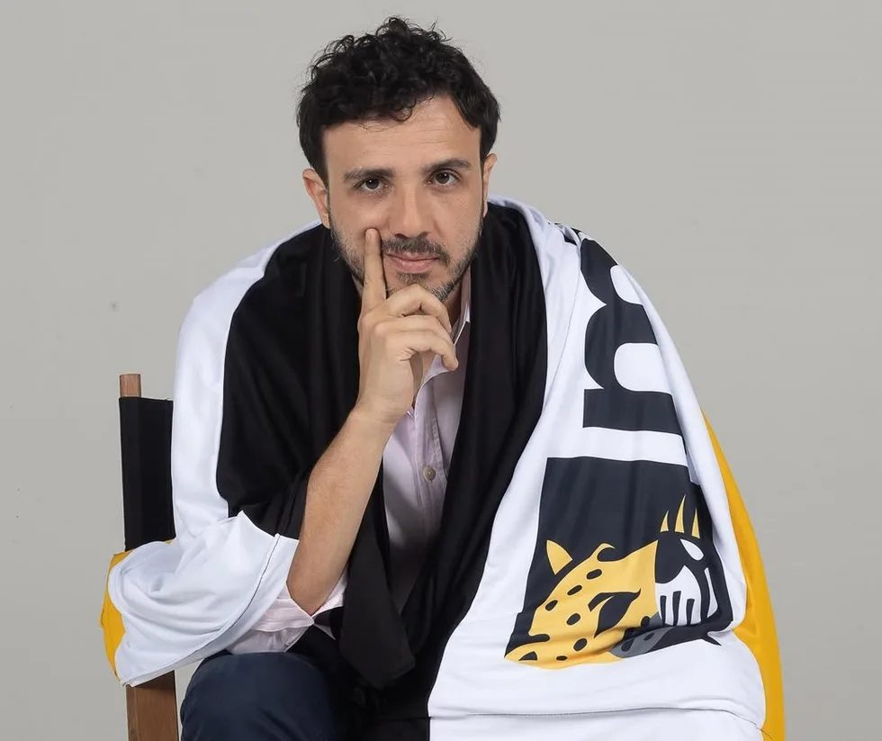

Quem está à frente dessa missão.
De quem mobilizou as ruas a quem agora disputa as urnas — conheça as lideranças que carregam essa trajetória.

Renan Santos
Uma das principais lideranças do MBL, participou da mobilização que marcou a política brasileira na última década. Agora, leva essa experiência para uma nova missão: disputar o futuro do Brasil como candidato à Presidência da República.
Conheça Renan →
Luiz Felipe França
Paranaense de Cianorte, advogado e ativista político, também construiu sua trajetória nas mobilizações do MBL. Defende um Paraná com instituições fortes, liberdade econômica, segurança jurídica e gestão eficiente. Agora, a missão é governar o Paraná.
Conheça França →Karen Guerreiro
Comunicadora e diretora de arte, decidiu entrar para a política por acreditar que pessoas dispostas a fazer diferente precisam ocupar os espaços de decisão. Sua pauta passa por desenvolvimento regional, educação, empregos, infraestrutura, saúde e proteção animal.
Conheça Karen →